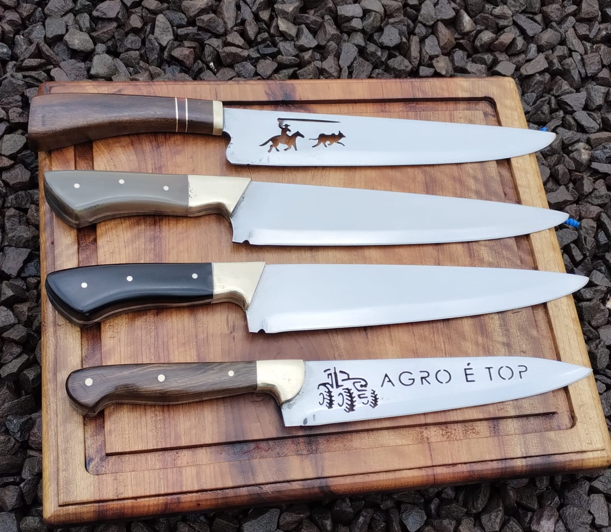
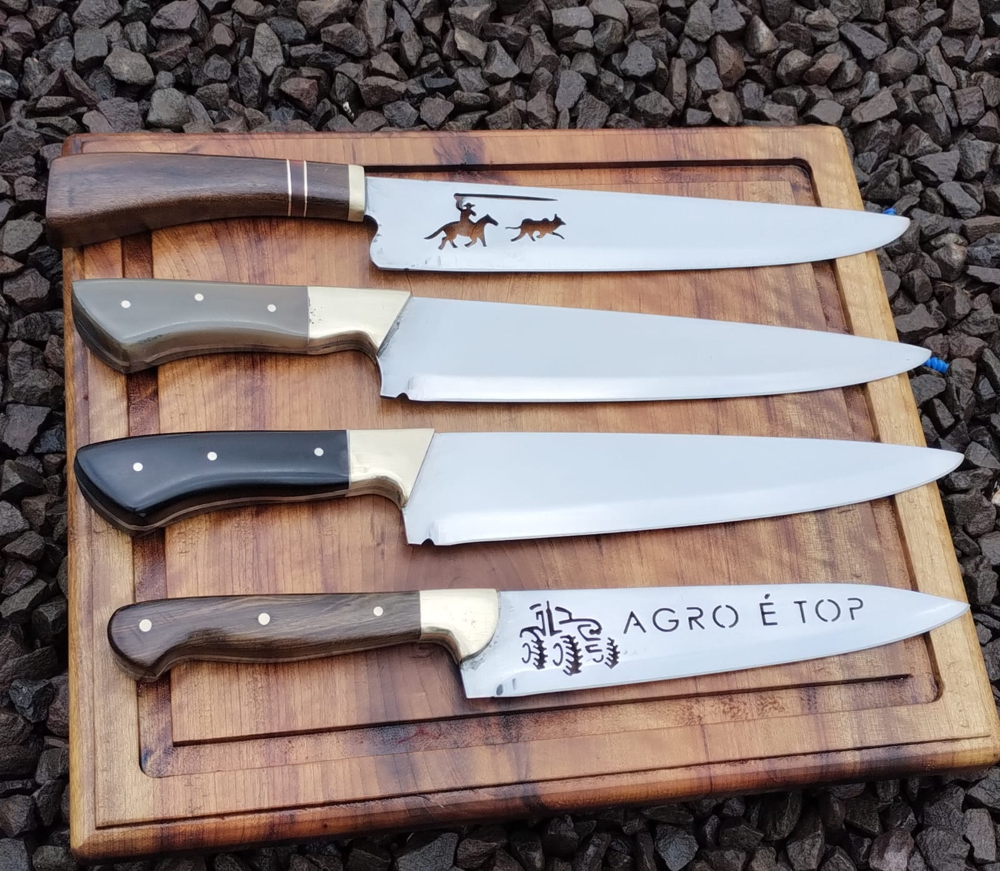
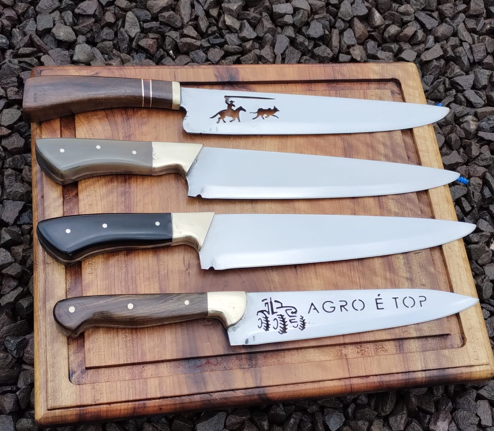

Galeria de Facas

 

Facas artesanais feitas à mão desde 2015
Sou Wagner Henrique, formado em técnico em agropecuária desde 2013, mas apaixonado pela arte da cutelaria desde 2015. Produzo facas artesanais, únicas e personalizadas, feitas com dedicação e cuidado para atender cada cliente de forma especial.

Entre em contato pelo e-mail: wagnerhenrique28@email.com